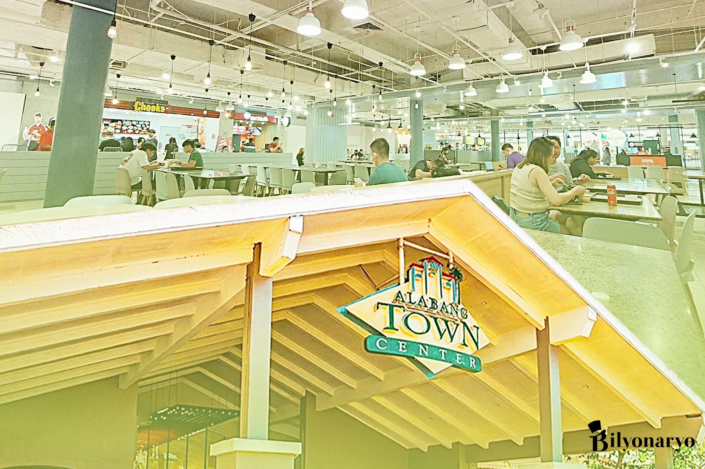

El Niño farm damage passes ₱10B; DA sees rice output about 1M MT below 2025
21 Nov 2026 · GMA News, citing DA
DA puts El Niño damage at ₱10.44B across 332,726 hectares in 16 regions, CALABARZON among them, with 311,289 MT of production lost and 338,066 farmers and fisherfolk affected. DA projects 2026 rice output at about 18.6 million MT, roughly one million MT below 2025. It blames fertilizer and fuel costs, El Niño, Habagat flooding and farmgate price swings that cut planted area. Corn is projected about 500,000 MT lower. DA says it has released ₱18.64B in interventions so far, mostly inputs and cash aid.
Operator read: retail rice has stayed flat in NCR for a week, but that comes from imports, not the harvest. Supply is tight, and the headroom goes with the next import policy change or peso move. Corn is the slower risk because it reaches you through feed costs in chicken and pork. Two moves: lock rice volume through February where your supplier will hold a price, and build Q1 menu pricing around a protein cost that is higher, not flat.
Open GMA News · Inquirer on imports

ATC food court reportedly closing 15 Jan to make way for Rockwell's The Grid
2 Nov 2026 · Bilyonaryo
Alabang Town Center's food court will reportedly close on 15 Jan 2027 and be replaced by The Grid, Rockwell's curated food hall, as Rockwell Land takes over the mall. Longtime shoppers pushed back online. They named Mesa Sizzlers, a 20-plus-year tenant, and worried about stall staff, and about smaller operators being priced out by Grid-level rents. Note: the closing date comes from reports and social posts, not from a Rockwell statement in the piece.
Operator read: this is the food-hall model replacing the food court. Curated concepts and higher rents serve a richer customer and push out the ₱150–250 meal. For an opener, that leaves a gap: budget-to-mid sit-down near Alabang, Muntinlupa and the South Luzon Expressway corridor toward Laguna. Experienced stall operators and crews will also be looking for work. If you want a Grid slot, ask for the terms early: food halls usually take a revenue share, and the curator controls the concept mix.
Open Bilyonaryo